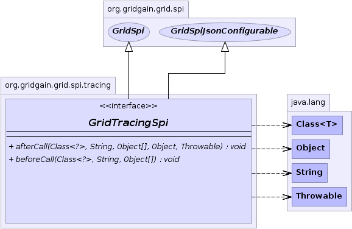

org.gridgain.grid.spi.tracing
Interface GridTracingSpi
- All Superinterfaces:
- GridSpi, GridSpiJsonConfigurable
- All Known Implementing Classes:
- GridJxinsightTracingSpi
public interface GridTracingSpi
- extends GridSpi, GridSpiJsonConfigurable
SPI provides pluggable tracing facility for GridGain. System runtime intercepts main
implementation methods and notifies this SPI. Implementation of this SPI should provide
any necessary processing of interception callbacks like collecting statistics, searching
for patterns, passing further to external monitoring console, etc.
GridGain comes with one default implementation:
-
- 
beforeCall
void beforeCall(Class<?> cls,
String methodName,
Object[] args)
- This callback is called right before target method interception.
- Parameters:
cls - Callee class.methodName - Callee method name.args - Callee method parameters.
afterCall
void afterCall(Class<?> cls,
String methodName,
Object[] args,
@Nullable
Object res,
Throwable e)
- This callback is called right after target method interception.
- Parameters:
cls - Callee class.methodName - Callee method name.args - Callee method parameters.res - Call result. Might be null if apply
returned null or if exception happened.e - Exception thrown by given method apply, if any.